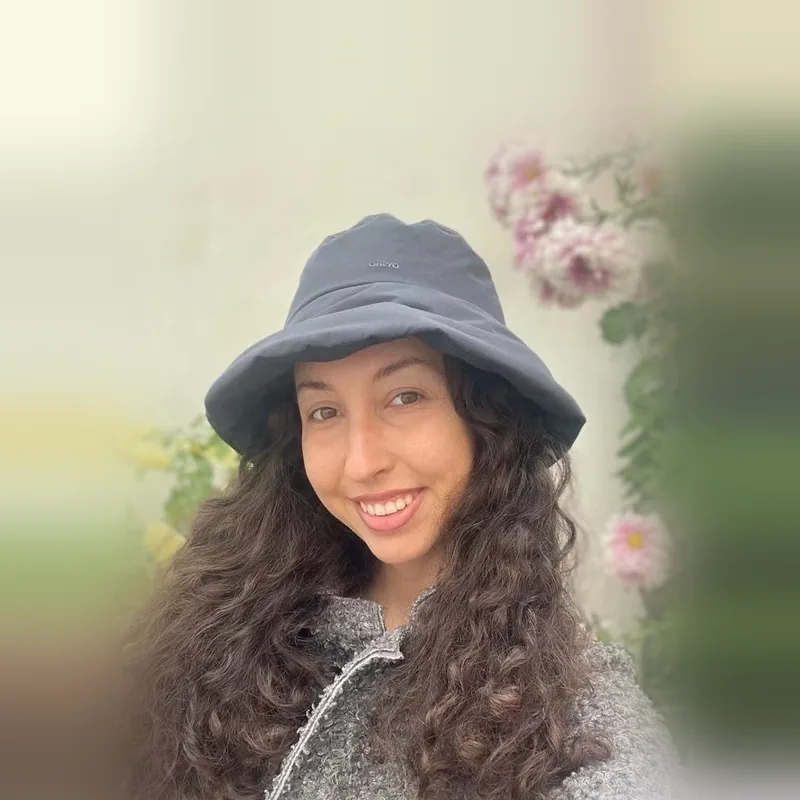

Педагог, който разбира вашето дете
Намерете педагог
за вашето дете за помощ в училище, наваксване или подготовка за изпити.
Отговорете на няколко кратки въпроса за детето: какво учи, какво му е трудно, какво го интересува и кога може да посещава уроци. Платформата ще ви открие подходящи педагози и ще ви покаже защо всеки може да е добър избор.
За семействата е безплатно. Информацията за диагнозата не се показва публично. Тя може да бъде видяна само от педагога, когото изберете, само след вашето съгласие.
Как работи
Три стъпки от въпросите до пробния урок.
Разкажете за нуждите
Град, предмет, клас, часове и бюджет. По желание: какво помага на детето. Отнема около 3 минути.
Вижте педагозите
Виждате педагози с описание, опит и цена. С регистрация получавате и процент на съвпадение с обяснение.
Пишете и запазвате урок
Изпращате заявка за пробен урок и съобщения в платформата. Вие решавате какво да споделите и кога.
За кого е платформата
Безплатно и спокойно
- Педагози с опит
Всеки профил описва опита с аутизъм и синдром на Даун, по години.
- Защитени данни
Не искаме името, снимката или адреса на детето. Диагнозата се споделя само след ваше съгласие.
Профил срещу месечен абонамент
- Проверка на профила
Екипът преглежда квалификацията, преди профилът да стане видим.
- Първият урок е пробен
Обяснявате предварително какво включва. Абонаментът е 20-25 € на месец (ще бъде уточнен).
Цветелина Ангелова
Психолог, завършила Нов български университет.
В работата си като психолог често се срещат семейства, които питат едно и също: къде да намерят подготвен педагог за детето си, с аутизъм или със синдром на Даун. Тогава нямаше добър отговор, който да могат да получат.
Sientica Nest е отговорът, който тя иска да изгради: място, където семействата намират педагог по предмет, град и нужди, и където данните за детето остават защитени.

Често задавани въпроси
Какво е Sientica Nest?
Безплатна за семействата платформа, която свързва деца с аутизъм и синдром на Даун с педагози по предмети. Тя не е агенция и не наема педагозите. Вие и педагогът се договаряте директно.
Колко струва за семействата?
Нищо. Педагозите плащат месечен абонамент за профила си.
Кой вижда диагнозата на детето ми?
Само педагогът, на когото изпратите заявка, и само след вашето отделно съгласие. Не се показва в резултатите и в профилите.
Гарантирате ли, че педагогът е подходящ?
Не. Подреждаме по профили. Затова първият урок е пробен.
Как да изтрия данните си?
От профила си, с един бутон. Можете и да оттеглите съгласието по всяко време.
Помогнете ни да я подобрим
Това е груб модел, за да видите визията и основния път. Не е окончателен дизайн и не е окончателна функционалност. Какво бихте добавили, махнали или променили?